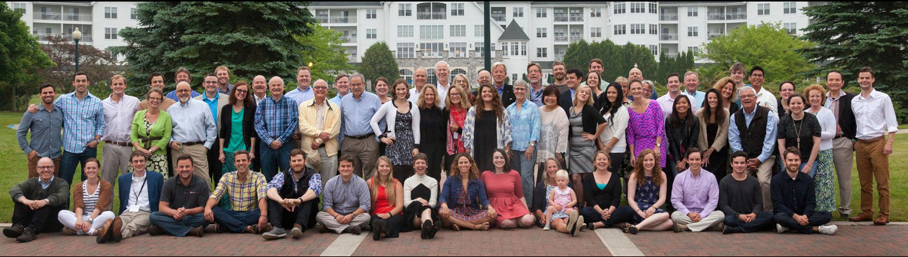
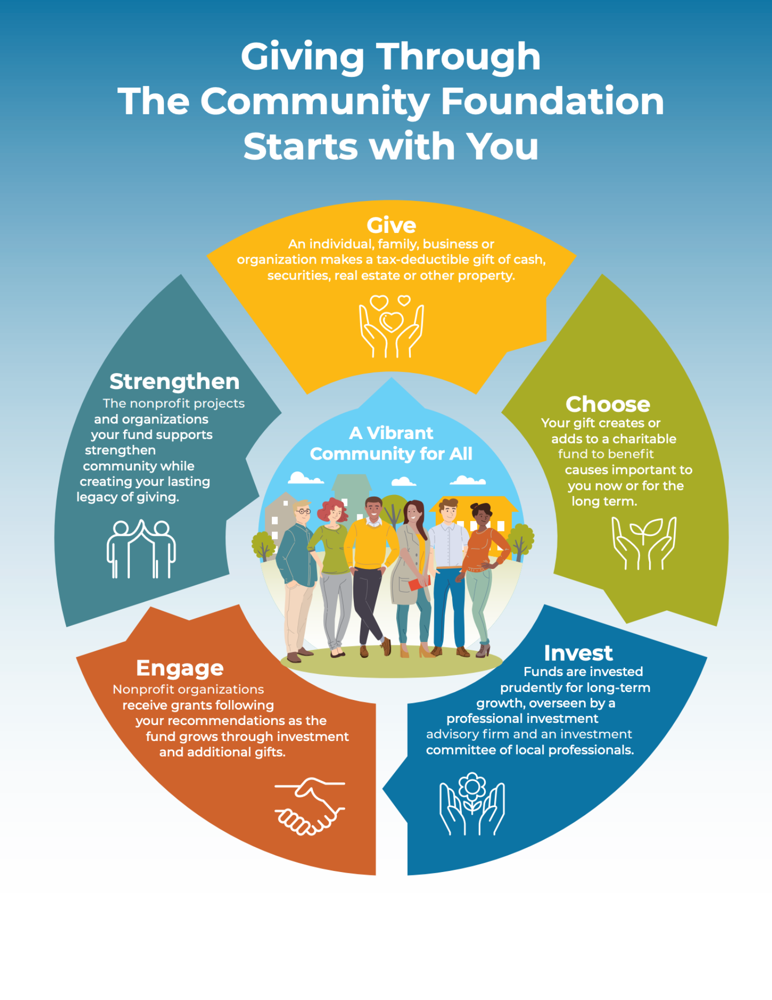

Additional Links

For as many motivations as there are to give, there are ways of giving. The key to having a rewarding experience is finding the best fit for you. Contact us! We’d love to talk with you, and your financial or legal advisors, about helping you get started on creating your lasting legacy of giving to strengthen the community.
Think about your charitable priorities, financial goals and personal preferences.
Consider the type of gift you’d like to make based on your financial situation and goals. A conversation with your financial advisor can help.
Determine your preferences for how involved you’d like to be in your giving and the level of recognition or anonymity.

We offer a variety of flexible fund options to help you easily and effectively accomplish your giving goals today and for the long-term. See our list of 1,700+ charitable funds that we manage on behalf of donors.
Our professional staff is committed to making your charitable giving easy, rewarding and more beneficial to the community. We’d be honored to work with you!
Jesse Pickett, a firefighter, fire prevention specialist and spokesman for the Grand Chute Fire Department, died in a traffic accident Dec. 8, 2013, at age 29. His wife, Misty, and two daughters survived. His memory — and his dedication to fire safety — live on in the Community Foundation’s Pickett Fire Safety and Community Fund. The permanent endowment has been built up by donations from friends and coworkers, a golf outing, and the “Kick It for Pickett” kickball tournament.
Brad Pickett describes his little brother as the guy always willing to help. “He was passionate about everything he did in the fire service,” Brad said. “It was just really important for us to carry on the work Jesse was doing.”
The fund will do things like provide equipment for fire departments in northeast Wisconsin, distribute smoke detectors or help out in a disaster. It started as a future fund for $1,000, but quickly reached $10,000, the minimum required for a charitable fund to begin awarding grants. ***Typically, five percent of a fund is available for making grants to nonprofit organizations each year.
“Everyone is willing to help because that’s who Jesse was,” Brad said.
Make a gift online or give by check, payable to CFFVR/Pickett Fund and mailed to:
Community Foundation
4455 W. Lawrence St.
Appleton, WI 54914
***Please note this amount was accurate at the time this story was published and the amount may have changed.
The Schubbe family has added an extra name to their holiday gift list in recent years, and it’s unlikely that they’ll ever run short of gift ideas.
The extra recipient is the community, and their vehicle for giving is the Schubbe Family Fund, a permanent endowment established within the Community Foundation in 1998. The contributions to the family fund in each others’ names take the place of shopping for gifts. Then they discuss as a family which charities to support with grants from the fund.
The list actually includes multiple communities. Brothers Peter and John share a chiropractic practice in Appleton and Phillip lives in Iowa. Sister Ann Wegge lives in Florida. The family’s donor advised fund – set up by their late father, former Kimberly-Clark executive Burnell Schubbe – allows them the flexibility to recommend grants to assist charitable organizations locally, nationally or internationally.
Contact us if you need any assistance.
4455 W. Lawrence St.
Appleton, WI 54914
(920) 830-1290
Regular Hours
Monday-Friday: 8 am-4 pm
Summer Hours
Monday-Thursday: 8 am-4 pm
Friday: 8 am-12 pm
Confirmed in compliance with national standards for U.S. community foundations.